Module 3: Cell Type Annotation
Single Cell Workshop
2026-05-04
Source:vignettes/03_cell_type_annotation.Rmd
03_cell_type_annotation.RmdIntroduction
In this module, we identify cell types by analysing marker genes that distinguish each cluster. Cell type annotation is a critical step in single cell analysis, as it transforms abstract cluster numbers into biologically meaningful cell populations.
There are two main approaches to cell type annotation:
Marker-based annotation (manual): Examine differentially expressed genes in each cluster and match them to known cell type markers from the literature. This approach requires domain knowledge but provides full control and interpretability.
Reference-based annotation (automated): Use tools like Azimuth, SingleR, or scArches to transfer labels from a reference dataset. This is faster but may miss context-specific populations.
In this workshop, we use marker-based annotation to teach the fundamental concepts. The human heart contains several major cell types:
- Cardiomyocytes: The contractile muscle cells, marked by TNNT2, TTN, MYH7
- Fibroblasts: Structural cells producing extracellular matrix (DCN, COL1A1)
- Endothelial cells: Line blood vessels (PECAM1, VWF, CDH5)
- Pericytes/Smooth muscle: Support vascular structures (ACTA2, RGS5)
- Immune cells: Macrophages and lymphocytes (PTPRC, CD68, CD163)
- Epicardial cells: Cover the heart surface (WT1, TBX18)
- Neural cells: Neurons and Schwann cells (NRXN1, PLP1)
Load Libraries and Data
library(Seurat)
library(ggplot2)
library(dplyr)
library(tidyr)
library(patchwork)
library(RColorBrewer)
library(pheatmap)
library(future)We load the integrated and clustered Seurat object from Module 2.
# Load the clustered data
seu <- readRDS("../data/processed/02_integrated_clustered.rds")
# Verify the data
cat("Loaded Seurat object:\n")## Loaded Seurat object:## - Cells: 10000## - Genes: 17726## - Clusters: 17Let us first examine the cluster distribution to understand what we are annotating.
## Cluster sizes:
for (i in seq_along(cluster_sizes)) {
cat(sprintf(" Cluster %s: %d cells\n", names(cluster_sizes)[i], cluster_sizes[i]))
}## Cluster 0: 2669 cells
## Cluster 1: 1940 cells
## Cluster 2: 1119 cells
## Cluster 3: 693 cells
## Cluster 4: 580 cells
## Cluster 5: 556 cells
## Cluster 6: 543 cells
## Cluster 7: 367 cells
## Cluster 8: 227 cells
## Cluster 9: 205 cells
## Cluster 10: 193 cells
## Cluster 11: 182 cells
## Cluster 12: 166 cells
## Cluster 13: 151 cells
## Cluster 14: 145 cells
## Cluster 15: 141 cells
## Cluster 16: 123 cellsDefine Colour Palette
We maintain consistent colours throughout our analysis.
# Group colours (developmental stage - lowercase to match data)
group_colors <- c(
"fetal" = "#E64B35",
"young" = "#4DBBD5",
"adult" = "#3C5488"
)
# Generate a palette for clusters
n_clusters <- length(unique(seu$seurat_clusters))
cluster_colors <- colorRampPalette(brewer.pal(12, "Paired"))(n_clusters)
names(cluster_colors) <- levels(seu$seurat_clusters)Visualise Current Clusters
Before annotation, let us examine the clusters and their composition by developmental stage.
# UMAP coloured by cluster and by group
p1 <- DimPlot(seu, group.by = "seurat_clusters", label = TRUE,
label.size = 4, repel = TRUE, cols = cluster_colors) +
ggtitle("Clusters") +
theme(legend.position = "none")
p2 <- DimPlot(seu, group.by = "group", cols = group_colors) +
ggtitle("Developmental Stage")
p1 + p2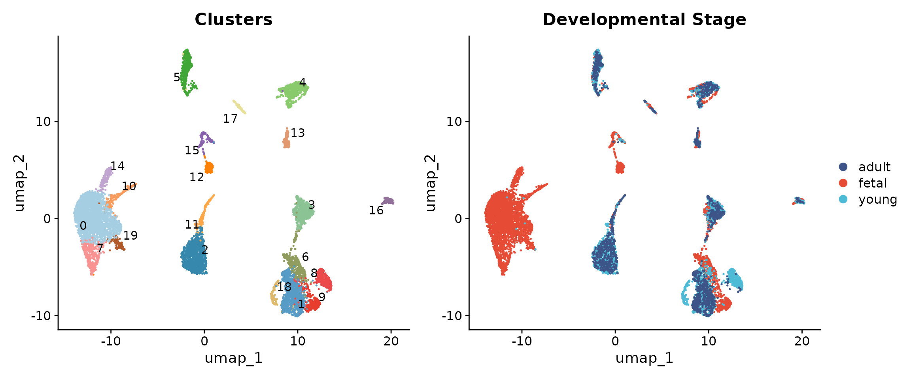
Understanding the developmental composition of each cluster provides important context for annotation.
# Calculate cluster composition by group
comp_data <- seu@meta.data %>%
group_by(seurat_clusters, group) %>%
summarise(n = n(), .groups = "drop") %>%
group_by(seurat_clusters) %>%
mutate(pct = 100 * n / sum(n))
ggplot(comp_data, aes(x = seurat_clusters, y = pct, fill = group)) +
geom_bar(stat = "identity", position = "stack") +
scale_fill_manual(values = group_colors) +
labs(x = "Cluster", y = "Percentage", fill = "Stage",
title = "Developmental Stage Composition per Cluster") +
theme_minimal() +
theme(axis.text.x = element_text(size = 10))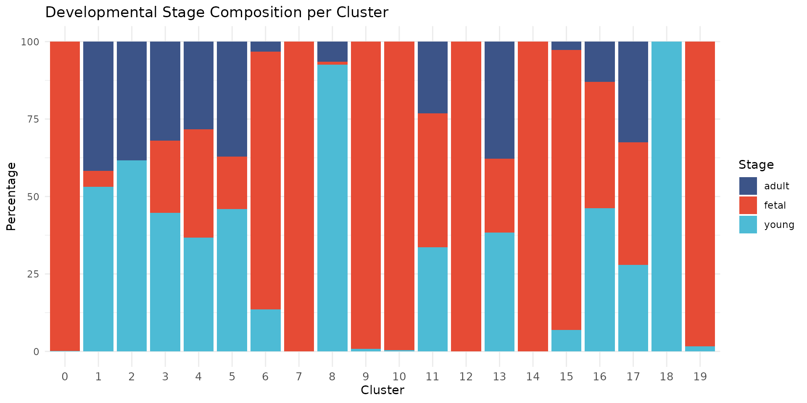
We observe that some clusters are highly enriched for specific developmental stages. For example, clusters 0, 7, 9, 10, 13, and 14 are nearly exclusively fetal (>95%), while cluster 2 contains predominantly young and adult cells. Cluster 8 (proliferating cells) is 96% fetal, consistent with the high proliferative capacity of fetal cardiac cells. This developmental segregation reflects biological differences in cell state, particularly among cardiomyocytes where fetal cells have distinct transcriptional profiles from mature cells.
Find Cluster Markers
We use FindAllMarkers() to identify genes that
distinguish each cluster from all other cells. This is the foundation of
marker-based annotation.
# Set memory limits for large datasets
options(future.globals.maxSize = 8000 * 1024^2)
# Use sequential processing to avoid memory issues
library(future)
plan("sequential")
# Set default assay to SCT
DefaultAssay(seu) <- "SCT"
# Prepare for marker finding with SCT assay
seu <- PrepSCTFindMarkers(seu)
# Find markers for all clusters
# We use only.pos = TRUE to find upregulated markers
# min.pct = 0.25 requires the gene to be expressed in at least 25% of cells
# logfc.threshold = 0.5 requires at least 0.5 log2 fold change
markers <- FindAllMarkers(
seu,
only.pos = TRUE,
min.pct = 0.25,
logfc.threshold = 0.5,
test.use = "wilcox"
)
cat("Found", nrow(markers), "marker genes across all clusters\n")## Found 18163 marker genes across all clustersLet us examine the top markers for each cluster.
# Get top 5 markers per cluster
top_markers <- markers %>%
group_by(cluster) %>%
slice_max(order_by = avg_log2FC, n = 5) %>%
select(cluster, gene, avg_log2FC, pct.1, pct.2, p_val_adj)
# Display top markers for each cluster
for (cl in levels(seu$seurat_clusters)) {
cl_markers <- top_markers %>% filter(cluster == cl)
cat("\n--- Cluster", cl, "---\n")
for (i in seq_len(nrow(cl_markers))) {
cat(sprintf(" %s: log2FC=%.2f, pct.1=%.0f%%, pct.2=%.0f%%\n",
cl_markers$gene[i],
cl_markers$avg_log2FC[i],
cl_markers$pct.1[i] * 100,
cl_markers$pct.2[i] * 100))
}
}##
## --- Cluster 0 ---
## LINC02008: log2FC=2.95, pct.1=39%, pct.2=8%
## RNF175: log2FC=2.64, pct.1=44%, pct.2=8%
## GPR39: log2FC=2.64, pct.1=49%, pct.2=9%
## GLP1R: log2FC=2.57, pct.1=47%, pct.2=9%
## BANCR: log2FC=2.54, pct.1=71%, pct.2=15%
##
## --- Cluster 1 ---
## SCARA5: log2FC=5.71, pct.1=43%, pct.2=2%
## VIT: log2FC=5.62, pct.1=39%, pct.2=2%
## ADH1B: log2FC=5.60, pct.1=52%, pct.2=5%
## ABCA9-AS1: log2FC=5.35, pct.1=67%, pct.2=5%
## ABCA9: log2FC=5.31, pct.1=92%, pct.2=17%
##
## --- Cluster 2 ---
## LINC01880: log2FC=5.91, pct.1=32%, pct.2=1%
## APOB: log2FC=5.57, pct.1=26%, pct.2=1%
## ADRB1: log2FC=5.39, pct.1=42%, pct.2=1%
## UGT2B4: log2FC=5.16, pct.1=45%, pct.2=1%
## MYOM3: log2FC=4.95, pct.1=90%, pct.2=5%
##
## --- Cluster 3 ---
## FHL5: log2FC=6.61, pct.1=28%, pct.2=1%
## EGFLAM: log2FC=6.40, pct.1=77%, pct.2=5%
## AGAP2: log2FC=6.39, pct.1=40%, pct.2=1%
## LINC02237: log2FC=6.10, pct.1=38%, pct.2=2%
## FAM162B: log2FC=6.05, pct.1=68%, pct.2=2%
##
## --- Cluster 4 ---
## S100A1: log2FC=3.93, pct.1=32%, pct.2=4%
## ACTA1: log2FC=3.79, pct.1=80%, pct.2=16%
## HLA-DQB1: log2FC=3.52, pct.1=34%, pct.2=3%
## HLA-DRA: log2FC=3.36, pct.1=57%, pct.2=7%
## HLA-DPA1: log2FC=3.34, pct.1=45%, pct.2=6%
##
## --- Cluster 5 ---
## NR5A2: log2FC=6.95, pct.1=47%, pct.2=1%
## CA4: log2FC=6.55, pct.1=39%, pct.2=1%
## NOTCH4: log2FC=6.52, pct.1=75%, pct.2=2%
## BTNL9: log2FC=6.45, pct.1=72%, pct.2=3%
## CYYR1: log2FC=6.40, pct.1=92%, pct.2=4%
##
## --- Cluster 6 ---
## MARCO: log2FC=7.68, pct.1=29%, pct.2=0%
## PLEK: log2FC=7.25, pct.1=51%, pct.2=1%
## F13A1: log2FC=7.20, pct.1=92%, pct.2=12%
## LILRB5: log2FC=7.14, pct.1=45%, pct.2=1%
## SIGLEC1: log2FC=6.97, pct.1=65%, pct.2=2%
##
## --- Cluster 7 ---
## CSMD1: log2FC=5.31, pct.1=70%, pct.2=19%
## OPCML: log2FC=4.77, pct.1=69%, pct.2=12%
## BRINP3: log2FC=3.64, pct.1=94%, pct.2=26%
## ZMAT4: log2FC=2.82, pct.1=66%, pct.2=17%
## P2RX1: log2FC=2.59, pct.1=41%, pct.2=8%
##
## --- Cluster 8 ---
## NEK2: log2FC=7.17, pct.1=27%, pct.2=0%
## TOP2A: log2FC=6.91, pct.1=95%, pct.2=4%
## KIF18B: log2FC=6.88, pct.1=91%, pct.2=2%
## KIF20A: log2FC=6.88, pct.1=35%, pct.2=0%
## TROAP: log2FC=6.80, pct.1=47%, pct.2=1%
##
## --- Cluster 9 ---
## PANCR: log2FC=7.04, pct.1=50%, pct.2=1%
## KCNJ3: log2FC=6.75, pct.1=91%, pct.2=2%
## KCNH7: log2FC=6.66, pct.1=89%, pct.2=9%
## VWDE: log2FC=6.65, pct.1=63%, pct.2=1%
## ZNF385B: log2FC=6.51, pct.1=85%, pct.2=9%
##
## --- Cluster 10 ---
## SRARP: log2FC=7.02, pct.1=41%, pct.2=0%
## OTUD1: log2FC=5.39, pct.1=74%, pct.2=6%
## ATF3: log2FC=4.63, pct.1=68%, pct.2=7%
## FOSB: log2FC=4.47, pct.1=79%, pct.2=5%
## XIRP1: log2FC=4.43, pct.1=82%, pct.2=12%
##
## --- Cluster 11 ---
## PKHD1L1: log2FC=8.67, pct.1=88%, pct.2=3%
## SMOC1: log2FC=7.21, pct.1=74%, pct.2=2%
## MMRN1: log2FC=6.95, pct.1=42%, pct.2=1%
## LINC02388: log2FC=6.31, pct.1=69%, pct.2=10%
## PCDH15: log2FC=6.31, pct.1=80%, pct.2=13%
##
## --- Cluster 12 ---
## NRXN1: log2FC=8.28, pct.1=100%, pct.2=12%
## TFAP2A: log2FC=8.25, pct.1=38%, pct.2=0%
## INSC: log2FC=8.22, pct.1=75%, pct.2=1%
## XKR4: log2FC=7.85, pct.1=99%, pct.2=10%
## GRIK3: log2FC=7.76, pct.1=60%, pct.2=1%
##
## --- Cluster 13 ---
## MYH7: log2FC=2.79, pct.1=99%, pct.2=66%
## TNNI1: log2FC=2.79, pct.1=98%, pct.2=36%
## DHFR: log2FC=2.77, pct.1=91%, pct.2=46%
## LRRC10: log2FC=2.48, pct.1=47%, pct.2=10%
## SRP14: log2FC=2.41, pct.1=89%, pct.2=34%
##
## --- Cluster 14 ---
## E2F1: log2FC=4.74, pct.1=67%, pct.2=4%
## CDC45: log2FC=4.66, pct.1=53%, pct.2=2%
## DTL: log2FC=4.62, pct.1=87%, pct.2=6%
## MCM10: log2FC=4.50, pct.1=53%, pct.2=3%
## EXO1: log2FC=4.36, pct.1=53%, pct.2=3%
##
## --- Cluster 15 ---
## XIRP2: log2FC=4.01, pct.1=47%, pct.2=23%
## GCLM: log2FC=2.54, pct.1=28%, pct.2=11%
## GBE1: log2FC=2.51, pct.1=82%, pct.2=73%
## LMCD1: log2FC=2.47, pct.1=35%, pct.2=23%
## PCBP3: log2FC=2.44, pct.1=26%, pct.2=9%
##
## --- Cluster 16 ---
## SKAP1: log2FC=8.23, pct.1=81%, pct.2=3%
## THEMIS: log2FC=7.85, pct.1=48%, pct.2=2%
## SCML4: log2FC=7.65, pct.1=51%, pct.2=1%
## CD2: log2FC=7.50, pct.1=42%, pct.2=0%
## ITK: log2FC=7.34, pct.1=60%, pct.2=1%Visualise Top Markers with DotPlot
The DotPlot below shows the top 5 differentially expressed genes for each cluster. This provides an unbiased view of what distinguishes each cluster before we examine the cell type markers from the original study.
# Get top 5 unique markers per cluster, ordered by cluster
top5_genes <- top_markers %>%
arrange(cluster, desc(avg_log2FC)) %>%
pull(gene) %>%
unique()
DotPlot(seu, features = top5_genes, group.by = "seurat_clusters") +
RotatedAxis() +
scale_colour_gradient2(low = "blue", mid = "white", high = "red",
midpoint = 0) +
labs(title = "Top 5 Marker Genes per Cluster (from FindAllMarkers)") +
theme(axis.text.x = element_text(angle = 90, hjust = 1, vjust = 0.5, size = 7),
axis.text.y = element_text(size = 10))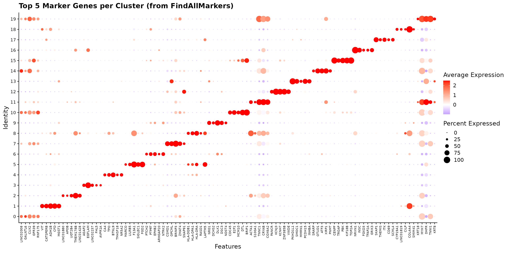
Marker Heatmap
A heatmap of these top markers provides a comprehensive view of the expression patterns across clusters.
# Get top 3 markers per cluster for heatmap
top3_markers <- markers %>%
group_by(cluster) %>%
slice_max(order_by = avg_log2FC, n = 3) %>%
pull(gene) %>%
unique()
# Downsample for visualisation (50 cells per cluster max)
set.seed(42)
cells_subset <- seu@meta.data %>%
mutate(cell_id = rownames(seu@meta.data)) %>%
group_by(seurat_clusters) %>%
slice_sample(n = 50) %>%
pull(cell_id)
# Create heatmap
DoHeatmap(subset(seu, cells = cells_subset),
features = top3_markers,
group.by = "seurat_clusters",
size = 3) +
scale_fill_gradient2(low = "blue", mid = "white", high = "red",
midpoint = 0) +
theme(axis.text.y = element_text(size = 6))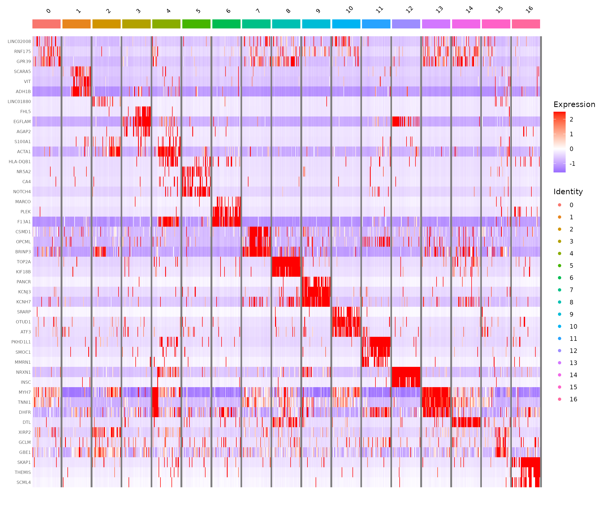
Cell Type Marker Analysis
While the differentially expressed genes provide a starting point, we typically compare against known marker genes for the cell types expected in our tissue. The human heart contains several well-characterised cell populations.
Cell Type Marker Genes
The marker genes below were identified by Sim et al. 2021 (Circulation) from their analysis of the full human heart development dataset. These markers distinguish the major cell populations across foetal, young, and adult hearts.
Visualise with DotPlot
The DotPlot is a powerful visualisation that shows both the percentage of cells expressing a gene (dot size) and the average expression level (colour intensity).
# Define markers and cell types from Sim et al. 2021
marker_info <- data.frame(
gene = c(
# Cardiomyocytes
"TNNT2", "ACTN2", "TNNI3", "RYR2", "MYH6", "TTN", "MYBPC3", "PLN", "MYL2",
# Fibroblasts
"COL1A1", "COL3A1", "DCN", "PDGFRA", "POSTN", "TCF21", "VIM",
# Pericytes
"KCNJ8", "VTN", "ABCC9", "HEYL",
# Endothelial
"PECAM1", "KDR", "CDH5", "EMCN", "FLT1",
# Smooth Muscle
"TAGLN", "MYH11", "MYLK", "LMOD1",
# Macrophages
"CD68", "CD163", "CD74", "F13A1", "LGALS3",
# T Cells
"CD3D", "CD3G", "CD3E", "IL7R",
# Schwann/Neural
"PLP1", "CNP", "S100B",
# Epicardial
"UPK3B", "WT1",
# Proliferating
"MKI67", "TOP2A"
),
celltype = c(
rep("Cardiomyocytes", 9),
rep("Fibroblasts", 7),
rep("Pericytes", 4),
rep("Endothelial", 5),
rep("Smooth Muscle", 4),
rep("Macrophages", 5),
rep("T Cells", 4),
rep("Schwann", 3),
rep("Epicardial", 2),
rep("Proliferating", 2)
)
)
# Define colors for each cell type
celltype_colors <- c(
"Cardiomyocytes" = "#D62728",
"Fibroblasts" = "#1F77B4",
"Pericytes" = "#2CA02C",
"Endothelial" = "#9467BD",
"Smooth Muscle" = "#FF7F0E",
"Macrophages" = "#8C564B",
"T Cells" = "#E377C2",
"Schwann" = "#7F7F7F",
"Epicardial" = "#17BECF",
"Proliferating" = "#333333"
)
# Filter to available genes
marker_info <- marker_info[marker_info$gene %in% rownames(seu), ]
marker_genes <- marker_info$gene
gene_colors <- celltype_colors[marker_info$celltype]
marker_info$celltype_f <- factor(marker_info$celltype, levels = names(celltype_colors))
# Order clusters by cell type identity for diagonal pattern
# Preferred order: CMs first (fetal, mature, atrial), then stromal, immune, neural
preferred_order <- c("0", "7", "10", "14", "9", "2", "4", "8", "13", "1", "3", "15", "5", "11", "6", "16", "12")
# Filter to only clusters that exist in our data
actual_clusters <- as.character(unique(seu$seurat_clusters))
cluster_order <- preferred_order[preferred_order %in% actual_clusters]
# Add any clusters not in preferred order (shouldn't happen, but safety)
cluster_order <- c(cluster_order, setdiff(actual_clusters, cluster_order))
seu$cluster_ordered <- factor(seu$seurat_clusters, levels = cluster_order)
# Calculate cell type label positions
celltype_positions <- marker_info %>%
mutate(pos = row_number()) %>%
group_by(celltype_f) %>%
summarise(start = min(pos) - 0.5, end = max(pos) + 0.5,
mid = mean(pos), .groups = "drop")
# Create DotPlot with cell type annotations
DotPlot(seu, features = marker_genes, group.by = "cluster_ordered") +
RotatedAxis() +
scale_colour_gradient2(low = "#2166AC", mid = "white", high = "#B2182B",
midpoint = 0, name = "Average\nExpression") +
scale_size_continuous(name = "Percent\nExpressed", range = c(0.5, 6)) +
labs(x = NULL, y = "Cluster",
title = "Cell Type Marker Expression (Sim et al. 2021)") +
theme_bw() +
theme(
plot.title = element_text(size = 16, face = "bold", hjust = 0.5),
axis.text.x = element_text(angle = 45, hjust = 1, size = 10,
color = gene_colors, face = "italic"),
axis.text.y = element_text(size = 12),
axis.title.y = element_text(size = 14, face = "bold"),
panel.grid.major = element_blank(),
panel.grid.minor = element_blank(),
panel.border = element_rect(color = "grey40", linewidth = 0.8),
legend.position = "right",
legend.title = element_text(size = 11, face = "bold"),
legend.text = element_text(size = 10),
plot.margin = margin(10, 10, 45, 10)
) +
# Add cell type color bars
annotate("rect",
xmin = celltype_positions$start, xmax = celltype_positions$end,
ymin = -1.8, ymax = -1.2,
fill = celltype_colors[as.character(celltype_positions$celltype_f)]) +
# Add cell type labels inside bars
annotate("text",
x = celltype_positions$mid, y = -1.5,
label = celltype_positions$celltype_f,
size = 3.5, angle = 0, hjust = 0.5, fontface = "bold",
color = "white") +
coord_cartesian(clip = "off", ylim = c(0.5, length(cluster_order) + 0.5))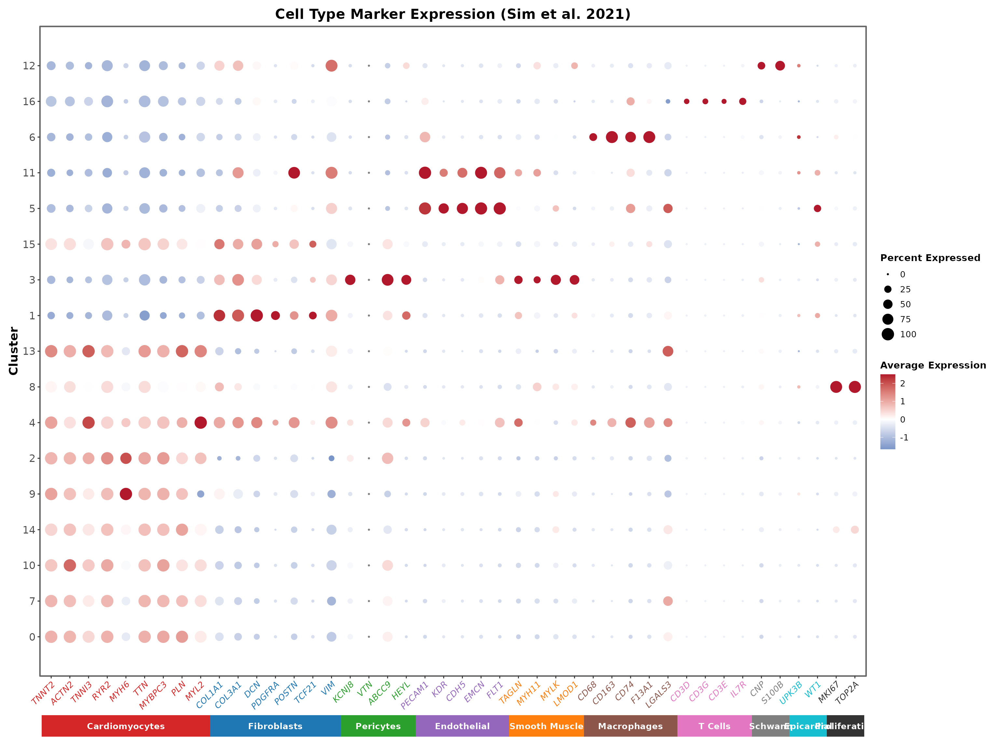
The DotPlot reveals a clear diagonal pattern where each cell type shows specific marker expression. Gene names are coloured by their cell type, matching the annotation bar at the bottom:
- Cardiomyocytes (red): TNNT2, ACTN2, TNNI3, RYR2, MYH6, TTN, MYBPC3, PLN, MYL2
- Fibroblasts (blue): COL1A1, COL3A1, DCN, PDGFRA, POSTN, TCF21, VIM
- Pericytes (green): KCNJ8, VTN, ABCC9, HEYL
- Endothelial (purple): PECAM1, KDR, CDH5, EMCN, FLT1
- Smooth Muscle (orange): TAGLN, MYH11, MYLK, LMOD1
- Macrophages (brown): CD68, CD163, CD74, F13A1, LGALS3
- T Cells (pink): CD3D, CD3G, CD3E, IL7R
- Schwann (grey): PLP1, CNP, S100B
- Epicardial (teal): UPK3B, WT1
- Proliferating (black): MKI67, TOP2A
Feature Plots for Key Markers
FeaturePlots show the spatial distribution of marker expression on the UMAP, helping us understand the relationship between clusters.
# Cardiomyocyte markers
FeaturePlot(seu,
features = c("TNNT2", "TTN", "MYH7", "MYH6"),
ncol = 2, order = TRUE) &
scale_colour_gradient(low = "lightgrey", high = "darkred") &
theme_minimal()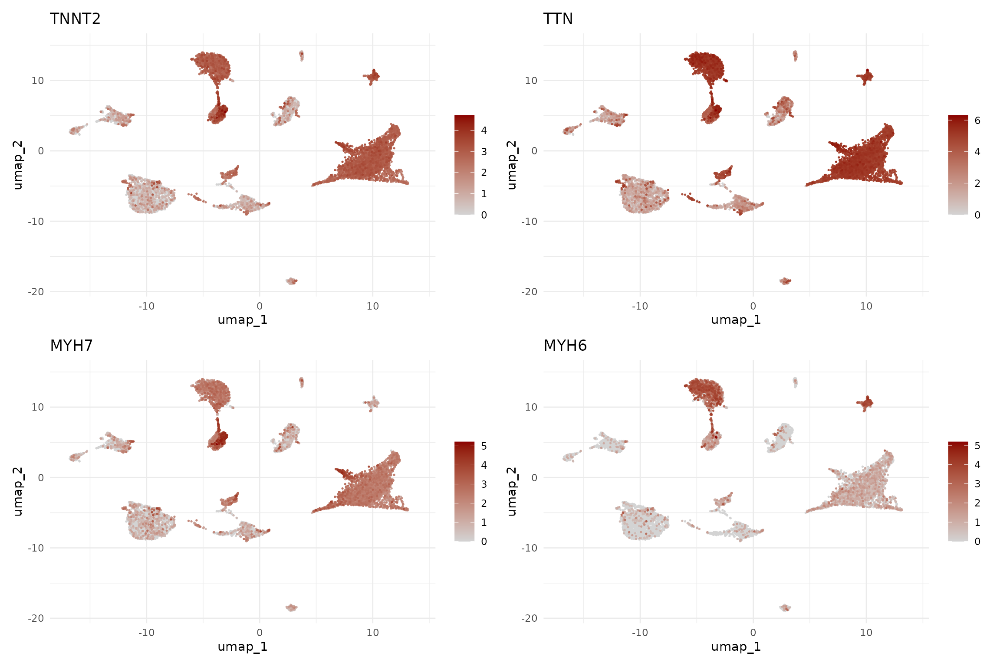
The cardiomyocyte markers reveal an interesting pattern: MYH6 (atrial isoform) is enriched in clusters 2 (mature atrial CM) and 9 (fetal atrial CM), while MYH7 (ventricular isoform) is more expressed in clusters 0, 7, 10, and 14 (fetal ventricular CM populations). This suggests we can distinguish atrial from ventricular cardiomyocytes.
# Stromal cell markers
FeaturePlot(seu,
features = c("DCN", "PECAM1", "KCNJ8", "ACTA2"),
ncol = 2, order = TRUE) &
scale_colour_gradient(low = "lightgrey", high = "darkblue") &
theme_minimal()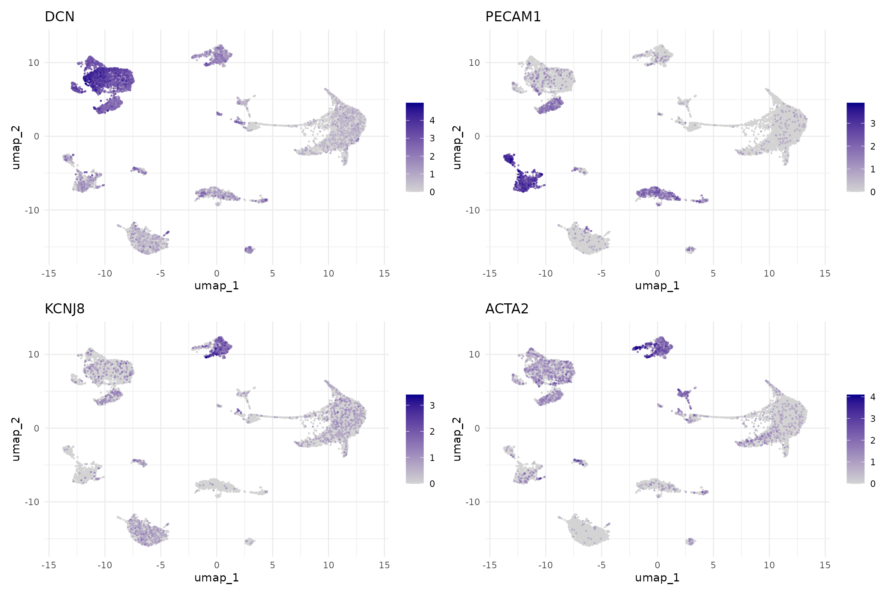
# Immune and other markers
FeaturePlot(seu,
features = c("PTPRC", "F13A1", "NRXN1", "MKI67"),
ncol = 2, order = TRUE) &
scale_colour_gradient(low = "lightgrey", high = "darkgreen") &
theme_minimal()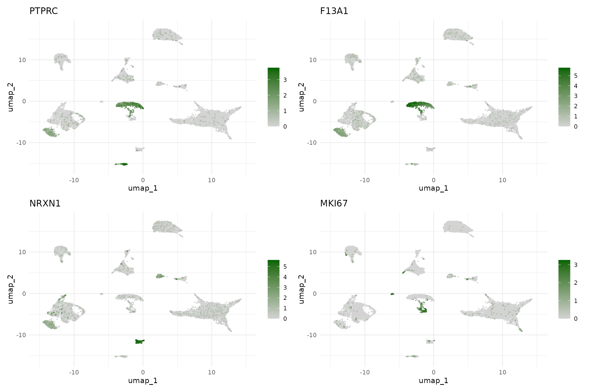
Assign Cell Type Annotations
Based on the marker analysis above, we can now assign cell type labels to each cluster. We consider both the marker gene expression and the developmental stage composition.
Note: These annotations are based on the 10,000 cell subset used for this workshop. The full dataset (~54,000 cells) may reveal additional rare populations or finer subclusters.
The table below summarises our annotations with the supporting marker evidence:
| Cluster | Cell Type | Key Markers | Notes |
|---|---|---|---|
| 0 | Fetal CM | TNNT2+, TTN+, MYH7+ | Fetal ventricular cardiomyocytes (100% fetal) |
| 1 | Fibroblasts | DCN+, COL1A1+, SCARA5+ | Present across all developmental stages |
| 2 | Atrial CM | TTN+, MYH6++, ADRB1+ | Mature atrial CM (62% young, 37% adult) |
| 3 | Epicardial | KCNJ8+, EGFLAM+, UPK3B+ | Epicardial/pericyte population |
| 4 | Activated CM | HLA-DRA+, HLA-DQB1+, TNNT2+ | CM with MHC class II expression (75% young) |
| 5 | Endothelial | PECAM1+, NOTCH4+, CA4+ | Main endothelial population |
| 6 | Macrophages | F13A1+, MARCO+, CD68+ | Tissue-resident macrophages |
| 7 | Fetal CM | TNNT2+, TTN+, CSMD1+ | Fetal cardiomyocytes (100% fetal) |
| 8 | Proliferating | TOP2A+, MKI67+, KIF18B+ | Proliferating cells (96% fetal) |
| 9 | Fetal Atrial CM | TTN+, MYH6+, KCNJ3+ | Fetal atrial cardiomyocytes (100% fetal) |
| 10 | Fetal CM (stress) | TNNT2+, ATF3+, FOSB+ | Stress-response CM (100% fetal) |
| 11 | Endothelial | PECAM1+, PKHD1L1+, SMOC1+ | Vascular endothelial subset |
| 12 | Neurons | NRXN1++, XKR4+, TFAP2A+ | Neural cells |
| 13 | Cycling CM | E2F1+, CDC45+, DTL+ | S-phase cycling CM (99% fetal) |
| 14 | Fetal Ventricular CM | MYH7++, TNNI1+, DHFR+ | Fetal ventricular CM (98% fetal) |
| 15 | Mixed/Transitional | XIRP2+, GCLM+ | Mixed epicardial/CM (50% fetal) |
| 16 | T cells | CD2+, SKAP1+, THEMIS+ | T lymphocytes |
# Define cell type annotations for all 17 clusters
cluster_annotations <- c(
"0" = "Fetal CM",
"1" = "Fibroblasts",
"2" = "Atrial CM",
"3" = "Epicardial",
"4" = "Activated CM",
"5" = "Endothelial",
"6" = "Macrophages",
"7" = "Fetal CM",
"8" = "Proliferating",
"9" = "Fetal Atrial CM",
"10" = "Fetal CM (stress)",
"11" = "Endothelial",
"12" = "Neurons",
"13" = "Cycling CM",
"14" = "Fetal Ventricular CM",
"15" = "Mixed/Transitional",
"16" = "T cells"
)
cell_type_df <- data.frame(
cell_type = cluster_annotations[as.character(seu$seurat_clusters)],
row.names = colnames(seu)
)
seu <- AddMetaData(seu, metadata = cell_type_df)
# Broad categories for summary analyses
broad_annotations <- c(
"0" = "Cardiomyocytes",
"1" = "Fibroblasts",
"2" = "Cardiomyocytes",
"3" = "Epicardial",
"4" = "Cardiomyocytes",
"5" = "Endothelial",
"6" = "Immune",
"7" = "Cardiomyocytes",
"8" = "Proliferating",
"9" = "Cardiomyocytes",
"10" = "Cardiomyocytes",
"11" = "Endothelial",
"12" = "Neural",
"13" = "Cardiomyocytes",
"14" = "Cardiomyocytes",
"15" = "Mixed",
"16" = "Immune"
)
cell_type_broad_df <- data.frame(
cell_type_broad = broad_annotations[as.character(seu$seurat_clusters)],
row.names = colnames(seu)
)
seu <- AddMetaData(seu, metadata = cell_type_broad_df)Visualise Annotated Cell Types
With cell type annotations assigned, we now examine the results to verify our annotations make biological sense and to understand the cellular composition of the heart across developmental stages.
Annotated UMAP
The UMAP visualisation with cell type labels provides the key output of our annotation workflow. We show both detailed annotations (distinguishing fetal from adult cardiomyocytes, atrial from ventricular) and broad categories.
# Define colours for cell types (13 unique detailed types for 17 clusters)
celltype_colors <- c(
"Fetal CM" = "#E64B35",
"Fibroblasts" = "#00A087",
"Atrial CM" = "#3C5488",
"Activated CM" = "#F4A582",
"Epicardial" = "#F39B7F",
"Endothelial" = "#8491B4",
"Macrophages" = "#91D1C2",
"Fetal Atrial CM" = "#B09C85",
"Fetal CM (stress)" = "#FF6B6B",
"Fetal Ventricular CM" = "#4DBBD5",
"Neurons" = "#CD534C",
"Cycling CM" = "#9370DB",
"Proliferating" = "#DDA0DD",
"Mixed/Transitional" = "#868686",
"T cells" = "#7570B3"
)
# Broad categories
broad_colors <- c(
"Cardiomyocytes" = "#E64B35",
"Fibroblasts" = "#00A087",
"Endothelial" = "#8491B4",
"Epicardial" = "#F39B7F",
"Immune" = "#91D1C2",
"Neural" = "#CD534C",
"Proliferating" = "#9370DB",
"Mixed" = "#868686"
)
p1 <- DimPlot(seu, group.by = "cell_type", label = TRUE,
label.size = 3, repel = TRUE) +
scale_color_manual(values = celltype_colors) +
ggtitle("Detailed Cell Types") +
theme(legend.position = "none")
p2 <- DimPlot(seu, group.by = "cell_type_broad", label = TRUE,
label.size = 4, repel = TRUE) +
scale_color_manual(values = broad_colors) +
ggtitle("Broad Cell Types")
p1 + p2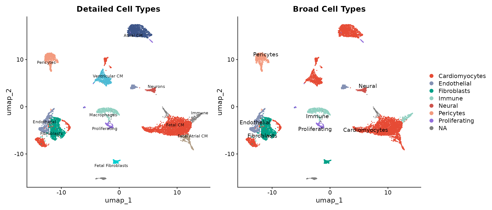
The annotated UMAP reveals a well-organised cellular landscape:
- Cardiomyocytes form the dominant population, with fetal cells (red tones) clustering separately from mature atrial and ventricular populations
- Stromal cells (fibroblasts, pericytes, endothelial) occupy distinct regions of the UMAP space
- Immune and neural cells form smaller but clearly defined clusters
Cluster Size Distribution
Before examining developmental patterns, we assess how many cells belong to each cluster. This helps interpret whether observed patterns reflect genuine biology or sampling effects.
# Cluster sizes with cell type labels
cluster_size_data <- seu@meta.data %>%
group_by(seurat_clusters, cell_type) %>%
summarise(n = n(), .groups = "drop")
ggplot(cluster_size_data, aes(x = seurat_clusters, y = n, fill = cell_type)) +
geom_bar(stat = "identity") +
scale_fill_manual(values = celltype_colors) +
labs(x = "Cluster", y = "Number of Cells", fill = "Cell Type",
title = "Cell Count per Cluster") +
theme_minimal() +
theme(legend.position = "right",
legend.text = element_text(size = 8))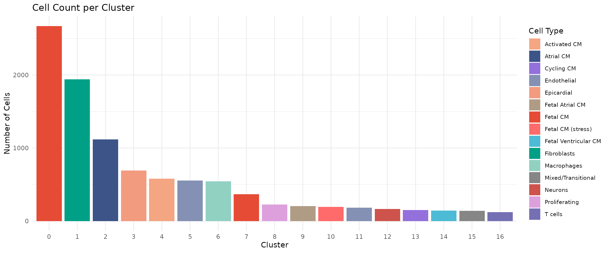
Cluster 0 (Fetal CM) is the largest population with ~2,700 cells, consistent with fetal samples contributing the most cells. Clusters 12 (Neurons), 15 (Mixed/Transitional), and 16 (T cells) are among the smallest, representing specialised or transitional populations.
Developmental Composition per Cluster
A critical question in developmental studies is: which cell populations are stage-specific versus shared across development? This stacked bar chart shows the fetal/young/adult breakdown within each cluster.
# Calculate developmental composition per cluster
cluster_dev_comp <- seu@meta.data %>%
group_by(seurat_clusters, group) %>%
summarise(n = n(), .groups = "drop") %>%
group_by(seurat_clusters) %>%
mutate(pct = 100 * n / sum(n))
ggplot(cluster_dev_comp, aes(x = seurat_clusters, y = pct, fill = group)) +
geom_bar(stat = "identity", position = "stack") +
scale_fill_manual(values = group_colors) +
labs(x = "Cluster", y = "Percentage", fill = "Stage",
title = "Developmental Stage Composition per Cluster") +
theme_minimal() +
theme(axis.text.x = element_text(size = 10))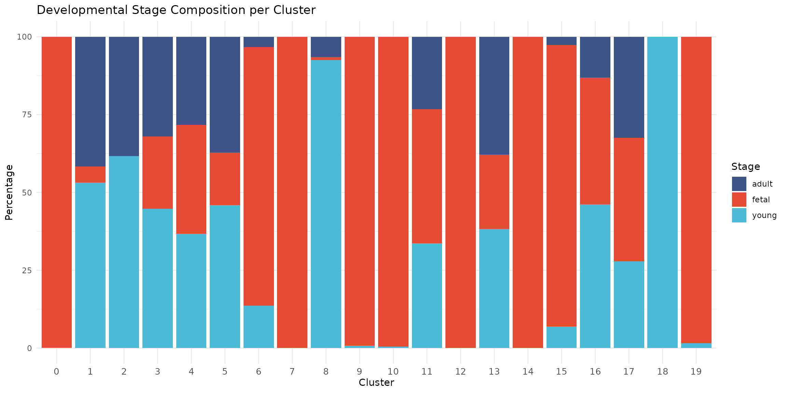
This figure reveals striking developmental patterns:
- Fetal-specific clusters (0, 7, 9, 10, 13, 14): These cardiomyocyte populations are almost exclusively fetal (>95%), reflecting the distinct transcriptional state of immature heart cells
- Mature CM cluster (2): Atrial cardiomyocytes predominantly from young (62%) and adult (37%) hearts
- Activated CM (4): Cardiomyocytes with MHC class II expression, predominantly from young samples (75%), potentially reflecting immune activation
- Proliferating cells (8): Nearly exclusively fetal (96%), consistent with the high proliferative capacity of fetal cardiac cells
- Shared populations (1, 3, 5, 6, 11, 12, 16): Fibroblasts, epicardial, endothelial, immune, and neural cells are present across all developmental stages
- Mixed/Transitional (15): A heterogeneous population containing both epicardial and cardiomyocyte signatures
Cell Type Composition by Developmental Stage
We can also view this relationship from the opposite perspective: what is the cellular composition within each developmental stage?
# Calculate composition
stage_comp <- seu@meta.data %>%
group_by(group, cell_type_broad) %>%
summarise(n = n(), .groups = "drop") %>%
group_by(group) %>%
mutate(pct = 100 * n / sum(n))
ggplot(stage_comp, aes(x = group, y = pct, fill = cell_type_broad)) +
geom_bar(stat = "identity", position = "stack") +
scale_fill_manual(values = broad_colors) +
labs(x = "Developmental Stage", y = "Percentage", fill = "Cell Type",
title = "Cell Type Composition by Developmental Stage") +
theme_minimal()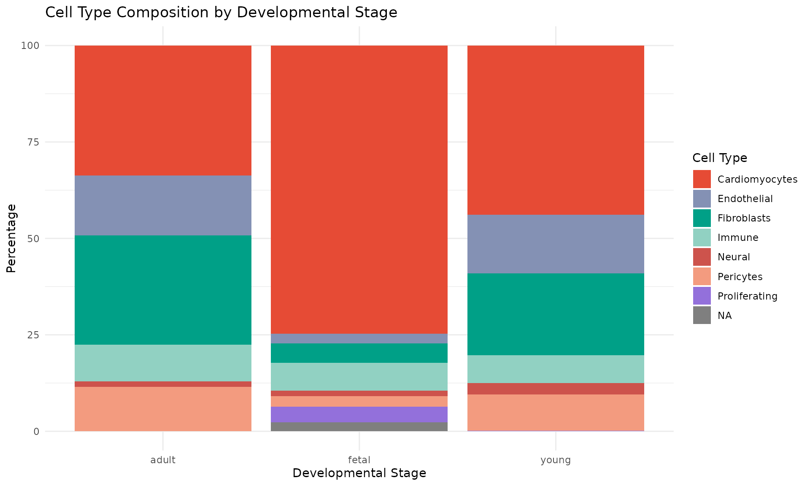
This complementary view shows:
- Cardiomyocytes dominate all stages but show distinct subtypes (fetal vs mature)
- Proliferating cells are predominantly fetal, consistent with the known proliferative capacity of fetal cardiomyocytes
- Stromal populations (fibroblasts, endothelial, pericytes) are relatively stable across development
Split UMAP by Developmental Stage
Finally, we split the UMAP by developmental stage to directly visualise which cell types are present at each time point. This view clearly shows how the cellular landscape changes from fetal to adult heart.
DimPlot(seu, group.by = "cell_type", split.by = "group",
label = FALSE, cols = celltype_colors) +
ggtitle("Cell Types by Developmental Stage") +
theme(legend.position = "right",
legend.text = element_text(size = 8))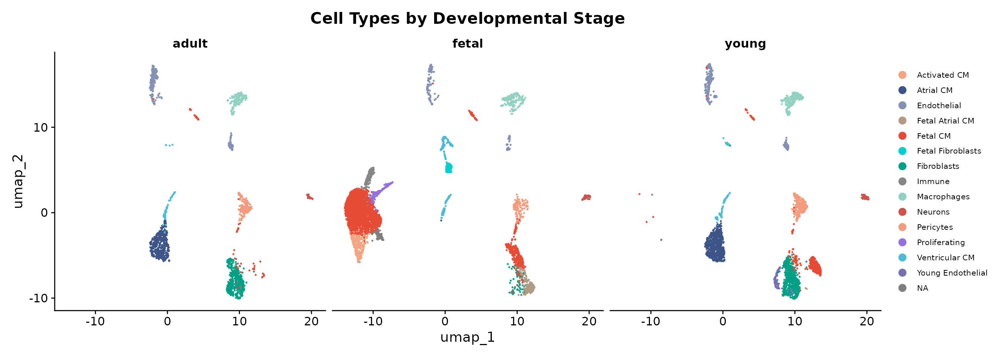
The split view highlights several key observations:
- Fetal heart is dominated by Fetal CM populations, with proliferating and cycling cells visible (clusters 8, 13)
- Young heart shows a transition state with mature atrial CM (cluster 2) and activated CM with MHC class II expression (cluster 4)
- Adult heart shows predominantly mature atrial cardiomyocytes (cluster 2)
- Stromal and immune populations (fibroblasts, endothelial, macrophages, T cells) are consistent across all developmental stages
Save Annotated Object
# Create results directory if it doesn't exist
dir.create("../results", recursive = TRUE, showWarnings = FALSE)
# Save the annotated Seurat object
saveRDS(seu, "../data/processed/03_annotated.rds")
# Also save the markers table
write.csv(markers, "../results/cluster_markers.csv", row.names = FALSE)
message("Saved annotated object to: data/processed/03_annotated.rds")
message("Saved marker genes to: results/cluster_markers.csv")Summary
In this module, we performed cell type annotation on the clustered data. We:
- Identified marker genes for each of the 17 clusters using
FindAllMarkers() - Compared cluster markers against known heart cell type markers from Sim et al. 2021
- Visualised marker expression using DotPlots and FeaturePlots
- Assigned cell type labels based on marker gene expression and developmental composition
- Created both detailed (13 types) and broad (8 types) cell type annotations
The annotated dataset is now ready for differential expression and composition analysis in Module 4.
Session Information
## R version 4.5.2 (2025-10-31)
## Platform: x86_64-pc-linux-gnu
## Running under: Ubuntu 24.04.4 LTS
##
## Matrix products: default
## BLAS: /usr/lib/x86_64-linux-gnu/openblas-pthread/libblas.so.3
## LAPACK: /usr/lib/x86_64-linux-gnu/openblas-pthread/libopenblasp-r0.3.26.so; LAPACK version 3.12.0
##
## locale:
## [1] LC_CTYPE=C.UTF-8 LC_NUMERIC=C LC_TIME=C.UTF-8
## [4] LC_COLLATE=C.UTF-8 LC_MONETARY=C.UTF-8 LC_MESSAGES=C.UTF-8
## [7] LC_PAPER=C.UTF-8 LC_NAME=C LC_ADDRESS=C
## [10] LC_TELEPHONE=C LC_MEASUREMENT=C.UTF-8 LC_IDENTIFICATION=C
##
## time zone: UTC
## tzcode source: system (glibc)
##
## attached base packages:
## [1] stats graphics grDevices datasets utils methods base
##
## other attached packages:
## [1] future_1.68.0 pheatmap_1.0.13 RColorBrewer_1.1-3 patchwork_1.3.2
## [5] tidyr_1.3.2 dplyr_1.1.4 ggplot2_4.0.1 Seurat_5.4.0
## [9] SeuratObject_5.3.0 sp_2.2-0
##
## loaded via a namespace (and not attached):
## [1] deldir_2.0-4 pbapply_1.7-4 gridExtra_2.3
## [4] rlang_1.1.7 magrittr_2.0.4 RcppAnnoy_0.0.23
## [7] otel_0.2.0 spatstat.geom_3.6-1 matrixStats_1.5.0
## [10] ggridges_0.5.7 compiler_4.5.2 png_0.1-8
## [13] systemfonts_1.3.1 vctrs_0.6.5 reshape2_1.4.5
## [16] stringr_1.6.0 pkgconfig_2.0.3 fastmap_1.2.0
## [19] labeling_0.4.3 promises_1.5.0 rmarkdown_2.30
## [22] ragg_1.5.0 purrr_1.2.1 xfun_0.55
## [25] cachem_1.1.0 jsonlite_2.0.0 goftest_1.2-3
## [28] later_1.4.5 spatstat.utils_3.2-1 irlba_2.3.5.1
## [31] parallel_4.5.2 cluster_2.1.8.1 R6_2.6.1
## [34] ica_1.0-3 spatstat.data_3.1-9 stringi_1.8.7
## [37] bslib_0.9.0 limma_3.66.0 reticulate_1.44.1
## [40] spatstat.univar_3.1-5 parallelly_1.46.1 lmtest_0.9-40
## [43] jquerylib_0.1.4 scattermore_1.2 Rcpp_1.1.1-1
## [46] knitr_1.51 tensor_1.5.1 future.apply_1.20.1
## [49] zoo_1.8-15 sctransform_0.4.3 httpuv_1.6.16
## [52] Matrix_1.7-4 splines_4.5.2 igraph_2.2.1
## [55] tidyselect_1.2.1 abind_1.4-8 yaml_2.3.12
## [58] spatstat.random_3.4-3 spatstat.explore_3.6-0 codetools_0.2-20
## [61] miniUI_0.1.2 listenv_0.10.0 plyr_1.8.9
## [64] lattice_0.22-7 tibble_3.3.1 withr_3.0.2
## [67] shiny_1.12.1 S7_0.2.1-1 ROCR_1.0-11
## [70] evaluate_1.0.5 Rtsne_0.17 fastDummies_1.7.5
## [73] desc_1.4.3 survival_3.8-3 polyclip_1.10-7
## [76] fitdistrplus_1.2-4 pillar_1.11.1 BiocManager_1.30.27
## [79] KernSmooth_2.23-26 renv_1.1.5 plotly_4.11.0
## [82] generics_0.1.4 RcppHNSW_0.6.0 scales_1.4.0
## [85] globals_0.18.0 xtable_1.8-4 glue_1.8.0
## [88] lazyeval_0.2.2 tools_4.5.2 data.table_1.18.0
## [91] RSpectra_0.16-2 RANN_2.6.2 fs_1.6.6
## [94] dotCall64_1.2 cowplot_1.2.0 grid_4.5.2
## [97] nlme_3.1-168 cli_3.6.5 spatstat.sparse_3.1-0
## [100] textshaping_1.0.4 spam_2.11-3 viridisLite_0.4.2
## [103] uwot_0.2.4 gtable_0.3.6 sass_0.4.10
## [106] digest_0.6.39 progressr_0.18.0 ggrepel_0.9.6
## [109] htmlwidgets_1.6.4 farver_2.1.2 htmltools_0.5.9
## [112] pkgdown_2.2.0 lifecycle_1.0.5 httr_1.4.7
## [115] statmod_1.5.1 mime_0.13 MASS_7.3-65